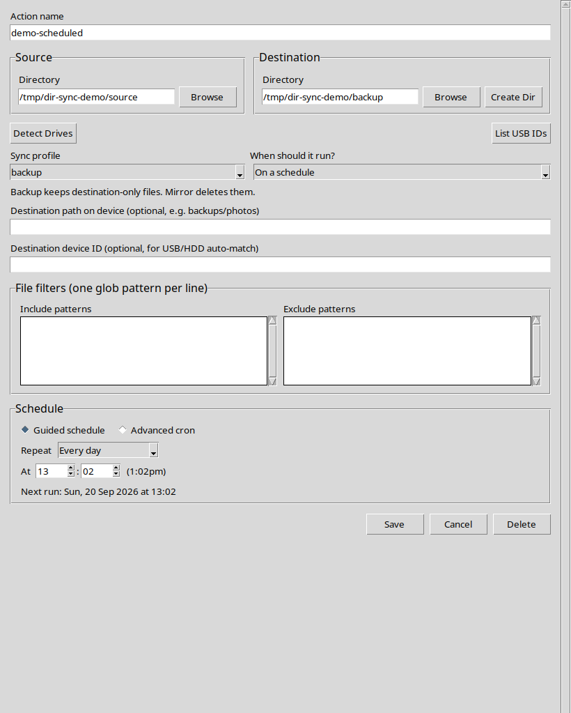

Automation
Choose a schedule in local time.
Set an action to run when the app starts, when a destination drive connects, or on a readable local-time schedule.

Every N minutes
Use an interval from 1 to 59 minutes, aligned to local clock boundaries.
Daily, weekly, monthly
Choose a local time, multiple weekdays, or a monthly date. Day 31 uses the last day of shorter months.
Advanced cron
Existing cron schedules remain supported for expert use.
Removable drives
Bind an action to a detected destination device ID when it should run after that drive connects. Review the destination path and use Preview only before enabling automatic runs.